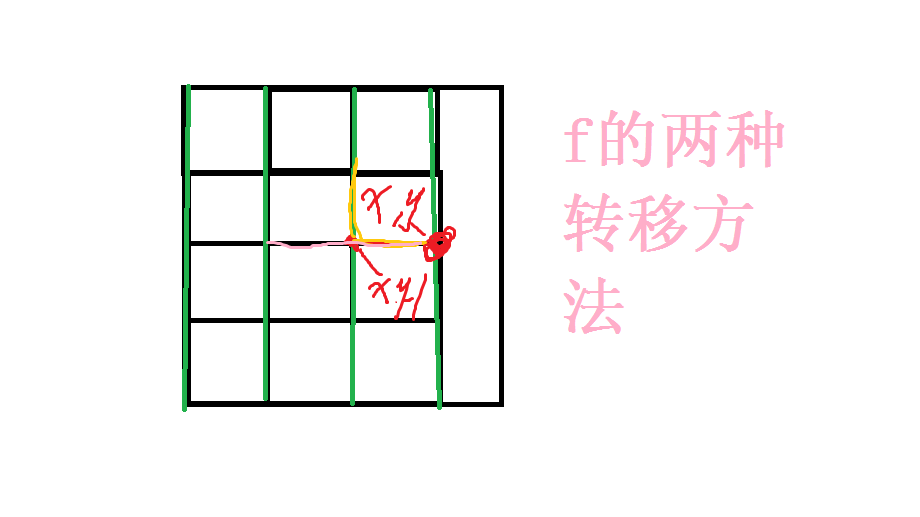

1 | /* |
lzy's space
一只蒟蒻
-
-
CF1220D Alex and Julian
前置知识：二分图的判定
没有奇环
做法
考虑从0开始，$lcm(a,b)$构成的环为奇环
有
当且仅当a,b中2的因子个数相等时，ab无法构成奇环，这种情况下$\frac{a}{gcd(a,b)}$和$\frac{b}{gcd(a,b)}$都是奇数
（本句话引自lg大佬，不会可以手动验证，好好想，蒟蒻数学这么差都想通了，画画图）
也就是说，对于任意两个数字，如果他们的lowbit相等，他们不会构成奇环
于是问题变成了 求n个数中lowbit相等的数字最多有多少个
code:
1
2
3
4
5
6
7
8
9
10
11
12
13
14
15
16
17
18
19
20
21
22
23
24
25
26
27
28
29
30
31
32
33
34
35
36
37
38
39
40
41
42
43
44
45
using namespace std;
int n;
ll a[maxn];
vector<ll> num[69];
signed main()
{
scanf("%d",&n);
for(int i=1;i<=n;i++)
{
scanf("%lld",&a[i]);
}
//两个数lowbit相同就可以保留
//直接枚举lowbit？
int ans=0,w;
for(int i=0;i<=60;i++)
{
int s=0;
for(int j=1;j<=n;j++)
{
//cout<<lowbit(a[j])<<" "<<(1<<i)<<endl;
if(lowbit(a[j])==(1ll<<i))
{
s++;
}else
{
num[i].push_back(a[j]);
}
}
if(s>ans)
{
w=i,ans=s;
}
}
printf("%d\n",n-ans);
for(int i=0;i<num[w].size();i++)
{
printf("%lld\n",num[w][i]);
}
return 0;
} -
P6275 [USACO20OPEN]Sprinklers 2: Return of the Alfalfa P
62751
2
3
4
5
6
7
8
9
10
11
12
13
14
15
16
17
18
19
20
21
22
23
24
25
26
27
28
29
30
31
32
33
34
35
36
37
38
39
40
41
42
43
44
45
46
47
48
49
50
51
52
53
54
55
56
57
58
59
60
61
62
63
64
65
66
67
68
69
70
71
72
73
74
75
76
77
78
79
80
81
82
83
84
85
86
87
88
//轮廓线dp
/*
发现A、C作物之间一定有一条分割线，
分割线的拐角处必须放灌溉器，剩下位置可以不放
但是如果要放，放的灌溉器种类是一定的
dp合法轮廓线的数量
设每一条轮廓线的权值是-2^拐角数量
每一次转移，如果拐弯了就要除以二
*/
using namespace std;
int n;
char c[maxn][maxn];
int f[maxn][maxn];//f表示横着来的
//有什么方法可以转移到f[i][j]?
/*
f[i][j-1]->f[i][j]
g[i][j-1]/2->f[i][j]
f[i-1][j]/2->g[i][j]
g[i-1][j]->g[i][j]
*/
int g[maxn][maxn];//g表示竖着来的
ll ksm(int a,int b)
{
ll ans=1,base=a;
while(b)
{
if(b&1)
{
ans*=base;
ans%=mod;
}
base*=base;
base%=mod;
}
return ans;
}
signed main()
{
scanf("%lld",&n);
for(int i=1;i<=n;i++)
{
scanf("%s",c[i]+1);
}
for(int i=1;i<=n+1;i++)
{
f[1][i]=1;
g[i][1]=1;
}
for(int i=2;i<=n+1;i++)//i可以取到n+1
{
for(int j=2;j<=n+1;j++)
{
f[i][j]=f[i][j-1];
if(c[i-1][j-1]!='W')//这边ij从1开始，所以要减一
{
f[i][j]=(f[i][j]+(ll)g[i][j-1]*inv)%mod;
}
g[i][j]=g[i-1][j];
if(c[i-1][j-1]!='W')
{
g[i][j]=(g[i][j]+(ll)f[i-1][j]*inv)%mod;
}
// cout<<f[i][j]<<" "<<g[i][j]<<endl;
}
}
int ans=(g[n+1][n+1]+f[n+1][n+1])%mod;
for(int i=1;i<=n;i++)
{
for(int j=1;j<=n;j++)
{
if(c[i][j]!='W')
{
ans=(ans*2)%mod;
}
}
}
printf("%lld\n",ans);
return 0;
} -
母亲节快乐！
1.妈妈 你把心铺成路，还怕我磕了脚 alt
alt2
感谢你不是超人，却为我变成了万能3
岁月从不败我的美人妈妈 ️
4
小棉袄会努力成为你的防弹衣5
你说你是妈妈的防弹衣，后来才知道你是妈妈的催泪弹6
别问你妈想要什么礼物，她就是想要我这样的女婿(儿媳妇） alt
alt7
听说神不能无处不在，所以创造了妈妈8
我加倍努力，就是希望成长的脚步，可以赶上您老去的速度9
曾厌恶你的市侩圆滑，却忘了你也曾松花酿酒，春水煮茶 alt
alt10
从前的愿望是仗剑走天涯，现在只想赖在你身边，听你细数年华11
整个世界都在催我长大，而你却心疼我的小翅膀12
羡慕我爸，娶到了世界上最好的女人 alt
alt13
和妈妈吵架的时候，摸摸自己肚子的肉，那是妈妈在外面赚钱养的。14
这个世界上只有你，愿意包容我的一千种任性。15
我快快长大，你慢慢变老ᵀᴴᴱ ᴮᴱˢᵀ ᴵˢ ᶠᴼᴿ ᵞᴼᵁ -
P3258
树剖裸题啦
每走一次路径+1
最后一个房间答案-1
1
2
3
4
5
6
7
8
9
10
11
12
13
14
15
16
17
18
19
20
21
22
23
24
25
26
27
28
29
30
31
32
33
34
35
36
37
38
39
40
41
42
43
44
45
46
47
48
49
50
51
52
53
54
55
56
57
58
59
60
61
62
63
64
65
66
67
68
69
70
71
72
73
74
75
76
77
78
79
80
81
82
83
84
85
86
87
88
89
90
91
92
93
94
95
96
97
98
99
100
101
102
103
104
105
106
107
108
109
110
111
112
113
114
115
116
117
118
119
120
121
122
123
124
125
126
127
128
129
130
131
132
133
134
135
136
137
138
139
140
141
142
143
144
145
146
147
using namespace std;
int fa[maxn],son[maxn],top[maxn],pos[maxn],dfn[maxn],size[maxn],dep[maxn];
vector<int> e[maxn];
int cnt=0;
int n;
int a[maxn];
struct node{
int l,r;
int mark;
int val;
}tr[maxn*4];
void dfs(int x)
{
size[x]=1;
for(int i=0;i<e[x].size();i++)
{
int to=e[x][i];
if(!size[to])
{
dep[to]=dep[x]+1;
fa[to]=x;
dfs(to);
size[x]+=size[to];
if(size[son[x]]<size[to])
{
son[x]=to;
}
}
}
}
void dfs2(int x,int tp)
{
cnt++;
pos[x]=cnt;
dfn[cnt]=x;
top[x]=tp;
if(son[x]!=0)dfs2(son[x],tp);
for(int i=0;i<e[x].size();i++)
{
int to=e[x][i];
if(top[to])continue;
dfs2(to,to);
}
}
void Build(int x,int l,int r)
{
tr[x].l=l,tr[x].r=r;
if(l==r)
{
tr[x].mark=0;
tr[x].val=0;
return;
}
int mid=(l+r)>>1;
Build(x*2,l,mid);
Build(x*2+1,mid+1,r);
tr[x].mark=0;
tr[x].val=0;
}
void relese(int x)
{
if(tr[x].l==tr[x].r||0==tr[x].mark)
{
return;
}
int ma=tr[x].mark;
int ls=x*2,rs=x*2+1;
int lsl=tr[ls].r-tr[ls].l+1;
int rsl=tr[rs].r-tr[rs].l+1;
tr[ls].val+=lsl*ma;
tr[ls].mark+=ma;
tr[rs].mark+=ma;
tr[rs].val+=rsl*ma;
tr[x].mark=0;
}
void Add(int x,int l,int r,int val)
{
if(l<=tr[x].l&&tr[x].r<=r)
{
tr[x].val+=val*(tr[x].r-tr[x].l+1);
tr[x].mark+=val;
return;
}
relese(x);
int mid=(tr[x].l+tr[x].r)>>1;
if(l<=mid)Add(x*2,l,r,val);
if(r>mid)Add(x*2+1,l,r,val);
tr[x].val=tr[x*2].val+tr[x*2+1].val;
}
void L_Add(int x,int y)
{
while(top[x]!=top[y])
{
if(dep[top[x]]<dep[top[y]])swap(x,y);
// cout<<x<<" "<<y<<" "<<dep[top[x]]<<" "<<dep[top[y]]<<endl;
Add(1,pos[top[x]],pos[x],1);
x=fa[top[x]];
}
if(pos[x]>pos[y])swap(x,y);
Add(1,pos[x],pos[y],1);
}
int Query(int x,int p)//单点查询
{
if(tr[x].l==tr[x].r)
{
return tr[x].val;
}
relese(x);
int mid=(tr[x].l+tr[x].r)>>1;
if(p<=mid)return Query(x*2,p);
else return Query(x*2+1,p);
}
signed main()
{
scanf("%d",&n);
for(int i=1;i<=n;i++)
{
scanf("%d",&a[i]);
}
for(int i=1;i<n;i++)
{
int x,y;
scanf("%d%d",&x,&y);
e[x].push_back(y);
e[y].push_back(x);
}
dep[1]=1;
dfs(1);
dfs2(1,1);
Build(1,1,n);
for(int i=2;i<=n;i++)
{
L_Add(a[i-1],a[i]);
if(2!=i)Add(1,pos[a[i-1]],pos[a[i-1]],-1);
// cout<<a[i-1]<<" "<<a[i]<<endl;
}
Add(1,pos[a[n]],pos[a[n]],-1);
for(int j=1;j<=n;j++)
{
printf("%d\n",Query(1,pos[j]));
}
return 0;
} -
Hello World